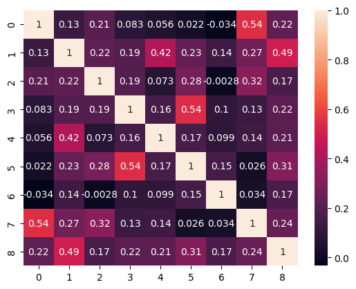
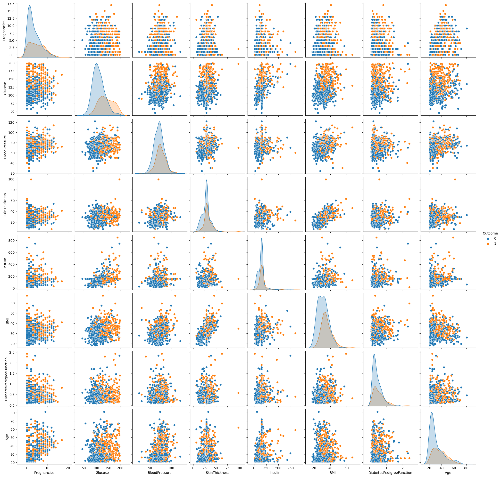

Latihan 2 : K-Means#
import pandas as pd
import numpy as np
import matplotlib.pyplot as plt
import seaborn as sns
from sklearn.cluster import KMeans
from sklearn.metrics import silhouette_score
from sklearn.preprocessing import MinMaxScaler
diabet = pd.read_csv("https://raw.githubusercontent.com/misbachulmunir21003/belajar/main/data1.csv")
diabet
| Pregnancies | Glucose | BloodPressure | SkinThickness | Insulin | BMI | DiabetesPedigreeFunction | Age | Outcome | |
|---|---|---|---|---|---|---|---|---|---|
| 0 | 6 | 148 | 72 | 35 | 0 | 33.6 | 0.627 | 50 | 1 |
| 1 | 1 | 85 | 66 | 29 | 0 | 26.6 | 0.351 | 31 | 0 |
| 2 | 8 | 183 | 64 | 0 | 0 | 23.3 | 0.672 | 32 | 1 |
| 3 | 1 | 89 | 66 | 23 | 94 | 28.1 | 0.167 | 21 | 0 |
| 4 | 0 | 137 | 40 | 35 | 168 | 43.1 | 2.288 | 33 | 1 |
| ... | ... | ... | ... | ... | ... | ... | ... | ... | ... |
| 763 | 10 | 101 | 76 | 48 | 180 | 32.9 | 0.171 | 63 | 0 |
| 764 | 2 | 122 | 70 | 27 | 0 | 36.8 | 0.340 | 27 | 0 |
| 765 | 5 | 121 | 72 | 23 | 112 | 26.2 | 0.245 | 30 | 0 |
| 766 | 1 | 126 | 60 | 0 | 0 | 30.1 | 0.349 | 47 | 1 |
| 767 | 1 | 93 | 70 | 31 | 0 | 30.4 | 0.315 | 23 | 0 |
768 rows × 9 columns
diabet.info()
diabet[0:768]
<class 'pandas.core.frame.DataFrame'>
RangeIndex: 768 entries, 0 to 767
Data columns (total 9 columns):
# Column Non-Null Count Dtype
--- ------ -------------- -----
0 Pregnancies 768 non-null int64
1 Glucose 768 non-null int64
2 BloodPressure 768 non-null int64
3 SkinThickness 768 non-null int64
4 Insulin 768 non-null int64
5 BMI 768 non-null float64
6 DiabetesPedigreeFunction 768 non-null float64
7 Age 768 non-null int64
8 Outcome 768 non-null int64
dtypes: float64(2), int64(7)
memory usage: 54.1 KB
| Pregnancies | Glucose | BloodPressure | SkinThickness | Insulin | BMI | DiabetesPedigreeFunction | Age | Outcome | |
|---|---|---|---|---|---|---|---|---|---|
| 0 | 6 | 148 | 72 | 35 | 0 | 33.6 | 0.627 | 50 | 1 |
| 1 | 1 | 85 | 66 | 29 | 0 | 26.6 | 0.351 | 31 | 0 |
| 2 | 8 | 183 | 64 | 0 | 0 | 23.3 | 0.672 | 32 | 1 |
| 3 | 1 | 89 | 66 | 23 | 94 | 28.1 | 0.167 | 21 | 0 |
| 4 | 0 | 137 | 40 | 35 | 168 | 43.1 | 2.288 | 33 | 1 |
| ... | ... | ... | ... | ... | ... | ... | ... | ... | ... |
| 763 | 10 | 101 | 76 | 48 | 180 | 32.9 | 0.171 | 63 | 0 |
| 764 | 2 | 122 | 70 | 27 | 0 | 36.8 | 0.340 | 27 | 0 |
| 765 | 5 | 121 | 72 | 23 | 112 | 26.2 | 0.245 | 30 | 0 |
| 766 | 1 | 126 | 60 | 0 | 0 | 30.1 | 0.349 | 47 | 1 |
| 767 | 1 | 93 | 70 | 31 | 0 | 30.4 | 0.315 | 23 | 0 |
768 rows × 9 columns
diabet.dtypes
Pregnancies int64
Glucose int64
BloodPressure int64
SkinThickness int64
Insulin int64
BMI float64
DiabetesPedigreeFunction float64
Age int64
Outcome int64
dtype: object
diabet.describe()
| Pregnancies | Glucose | BloodPressure | SkinThickness | Insulin | BMI | DiabetesPedigreeFunction | Age | Outcome | |
|---|---|---|---|---|---|---|---|---|---|
| count | 768.000000 | 768.000000 | 768.000000 | 768.000000 | 768.000000 | 768.000000 | 768.000000 | 768.000000 | 768.000000 |
| mean | 3.845052 | 120.894531 | 69.105469 | 20.536458 | 79.799479 | 31.992578 | 0.471876 | 33.240885 | 0.348958 |
| std | 3.369578 | 31.972618 | 19.355807 | 15.952218 | 115.244002 | 7.884160 | 0.331329 | 11.760232 | 0.476951 |
| min | 0.000000 | 0.000000 | 0.000000 | 0.000000 | 0.000000 | 0.000000 | 0.078000 | 21.000000 | 0.000000 |
| 25% | 1.000000 | 99.000000 | 62.000000 | 0.000000 | 0.000000 | 27.300000 | 0.243750 | 24.000000 | 0.000000 |
| 50% | 3.000000 | 117.000000 | 72.000000 | 23.000000 | 30.500000 | 32.000000 | 0.372500 | 29.000000 | 0.000000 |
| 75% | 6.000000 | 140.250000 | 80.000000 | 32.000000 | 127.250000 | 36.600000 | 0.626250 | 41.000000 | 1.000000 |
| max | 17.000000 | 199.000000 | 122.000000 | 99.000000 | 846.000000 | 67.100000 | 2.420000 | 81.000000 | 1.000000 |
diabet.isnull().sum()
Pregnancies 0
Glucose 0
BloodPressure 0
SkinThickness 0
Insulin 0
BMI 0
DiabetesPedigreeFunction 0
Age 0
Outcome 0
dtype: int64
diabet.info()
<class 'pandas.core.frame.DataFrame'>
RangeIndex: 768 entries, 0 to 767
Data columns (total 9 columns):
# Column Non-Null Count Dtype
--- ------ -------------- -----
0 Pregnancies 768 non-null int64
1 Glucose 768 non-null int64
2 BloodPressure 768 non-null int64
3 SkinThickness 768 non-null int64
4 Insulin 768 non-null int64
5 BMI 768 non-null float64
6 DiabetesPedigreeFunction 768 non-null float64
7 Age 768 non-null int64
8 Outcome 768 non-null int64
dtypes: float64(2), int64(7)
memory usage: 54.1 KB
print(diabet.groupby('Outcome').size())
Outcome
0 500
1 268
dtype: int64
# Outcome countplot (visualizing in bar graph)
import seaborn as sns
sns.countplot(x = 'Outcome',data = diabet)
<Axes: xlabel='Outcome', ylabel='count'>
diabet.columns
Index(['Pregnancies', 'Glucose', 'BloodPressure', 'SkinThickness', 'Insulin',
'BMI', 'DiabetesPedigreeFunction', 'Age', 'Outcome'],
dtype='object')
dataset_new = diabet
import numpy as np
dataset_new[["Glucose", "BloodPressure", "SkinThickness", "Insulin", "BMI"]] = dataset_new[["Glucose", "BloodPressure", "SkinThickness", "Insulin", "BMI"]].replace(0, np.NaN)
# Count of NaN
dataset_new.isnull().sum()
Pregnancies 0
Glucose 5
BloodPressure 35
SkinThickness 227
Insulin 374
BMI 11
DiabetesPedigreeFunction 0
Age 0
Outcome 0
dtype: int64
# Replacing NaN with mean values
dataset_new["Glucose"].fillna(dataset_new["Glucose"].mean(), inplace = True)
dataset_new["BloodPressure"].fillna(dataset_new["BloodPressure"].mean(), inplace = True)
dataset_new["SkinThickness"].fillna(dataset_new["SkinThickness"].mean(), inplace = True)
dataset_new["Insulin"].fillna(dataset_new["Insulin"].mean(), inplace = True)
dataset_new["BMI"].fillna(dataset_new["BMI"].mean(), inplace = True)
# Feature scaling using MinMaxScaler
from sklearn.preprocessing import MinMaxScaler
sc = MinMaxScaler(feature_range = (0, 1))
dataset_scaled = sc.fit_transform(dataset_new)
data1 = pd.DataFrame(dataset_scaled)
data1
| 0 | 1 | 2 | 3 | 4 | 5 | 6 | 7 | 8 | |
|---|---|---|---|---|---|---|---|---|---|
| 0 | 0.352941 | 0.670968 | 0.489796 | 0.304348 | 0.170130 | 0.314928 | 0.234415 | 0.483333 | 1.0 |
| 1 | 0.058824 | 0.264516 | 0.428571 | 0.239130 | 0.170130 | 0.171779 | 0.116567 | 0.166667 | 0.0 |
| 2 | 0.470588 | 0.896774 | 0.408163 | 0.240798 | 0.170130 | 0.104294 | 0.253629 | 0.183333 | 1.0 |
| 3 | 0.058824 | 0.290323 | 0.428571 | 0.173913 | 0.096154 | 0.202454 | 0.038002 | 0.000000 | 0.0 |
| 4 | 0.000000 | 0.600000 | 0.163265 | 0.304348 | 0.185096 | 0.509202 | 0.943638 | 0.200000 | 1.0 |
| ... | ... | ... | ... | ... | ... | ... | ... | ... | ... |
| 763 | 0.588235 | 0.367742 | 0.530612 | 0.445652 | 0.199519 | 0.300613 | 0.039710 | 0.700000 | 0.0 |
| 764 | 0.117647 | 0.503226 | 0.469388 | 0.217391 | 0.170130 | 0.380368 | 0.111870 | 0.100000 | 0.0 |
| 765 | 0.294118 | 0.496774 | 0.489796 | 0.173913 | 0.117788 | 0.163599 | 0.071307 | 0.150000 | 0.0 |
| 766 | 0.058824 | 0.529032 | 0.367347 | 0.240798 | 0.170130 | 0.243354 | 0.115713 | 0.433333 | 1.0 |
| 767 | 0.058824 | 0.316129 | 0.469388 | 0.260870 | 0.170130 | 0.249489 | 0.101196 | 0.033333 | 0.0 |
768 rows × 9 columns
# Heatmap
sns.heatmap(data1.corr(), annot = True)
plt.show()

# Detailed distribution of the features in the dataset
sns.pairplot(data=diabet, hue='Outcome')
plt.show()

# Selecting features - [Glucose, Insulin, BMI]
X = data1.iloc[:, [1, 4, 5]].values
Y = data1.iloc[:, 8].values
# Splitting X and Y
from sklearn.model_selection import train_test_split
X_train, X_test, Y_train, Y_test = train_test_split(X, Y, test_size = 0.20, random_state = 42, stratify = dataset_new['Outcome'] )
# Checking dimensions
print("X_train shape:", X_train.shape)
print("X_test shape:", X_test.shape)
print("Y_train shape:", Y_train.shape)
print("Y_test shape:", Y_test.shape)
X_train shape: (614, 3)
X_test shape: (154, 3)
Y_train shape: (614,)
Y_test shape: (154,)
import sklearn
from sklearn.cluster import KMeans
KMeans_Clustering = KMeans(n_clusters =2, random_state=0)
KMeans_Clustering.fit(X_train)
/usr/local/lib/python3.10/dist-packages/sklearn/cluster/_kmeans.py:870: FutureWarning: The default value of `n_init` will change from 10 to 'auto' in 1.4. Set the value of `n_init` explicitly to suppress the warning
warnings.warn(
KMeans(n_clusters=2, random_state=0)In a Jupyter environment, please rerun this cell to show the HTML representation or trust the notebook.
On GitHub, the HTML representation is unable to render, please try loading this page with nbviewer.org.
KMeans(n_clusters=2, random_state=0)
print(KMeans_Clustering.cluster_centers_)
[[0.71411853 0.21796168 0.35414063]
[0.38662377 0.13804041 0.25757952]]
#prediction using kmeans and accuracy
kpred = KMeans_Clustering.predict(X_test)
print('Classification report:\n\n', sklearn.metrics.classification_report(Y_test,kpred))
Classification report:
precision recall f1-score support
0.0 0.44 0.24 0.31 100
1.0 0.23 0.43 0.30 54
accuracy 0.31 154
macro avg 0.33 0.33 0.31 154
weighted avg 0.36 0.31 0.31 154
#confusion matrix
from sklearn.metrics import confusion_matrix
print("Confusion Matrix :")
outcome_labels = sorted(diabet.Outcome.unique())
sns.heatmap(
confusion_matrix(Y_test, kpred),
annot=True,
xticklabels=outcome_labels,
yticklabels=outcome_labels
)
Confusion Matrix :
<Axes: >
#print("all data must be entered in 0-1 range")
#G= input("enter Glucose level : ")
#B = input("enter BMI level : " )
#A= input("enter Age : ")
#out = KMeans_Clustering.predict([[G,B,A]])
out = KMeans_Clustering.predict([[0.53,0.54,0.5253]])
if (out==0):
print("No Diabetes")
else:
print("Diabetes")
No Diabetes
plt.scatter(diabet.iloc[:, [1]].values,diabet.iloc[:, [5]].values, c=diabet['Outcome'], cmap='rainbow')
<matplotlib.collections.PathCollection at 0x782ad08ce770>
import sklearn
from sklearn.cluster import KMeans
KMeans_Clustering = KMeans(n_clusters =2, random_state=0)
KMeans_Clustering.fit(X)
/usr/local/lib/python3.10/dist-packages/sklearn/cluster/_kmeans.py:870: FutureWarning: The default value of `n_init` will change from 10 to 'auto' in 1.4. Set the value of `n_init` explicitly to suppress the warning
warnings.warn(
KMeans(n_clusters=2, random_state=0)In a Jupyter environment, please rerun this cell to show the HTML representation or trust the notebook.
On GitHub, the HTML representation is unable to render, please try loading this page with nbviewer.org.
KMeans(n_clusters=2, random_state=0)
plt.scatter(diabet.iloc[:, [1]].values,diabet.iloc[:, [5]].values, c=KMeans_Clustering.labels_, cmap='rainbow')
<matplotlib.collections.PathCollection at 0x782ac81a4760>